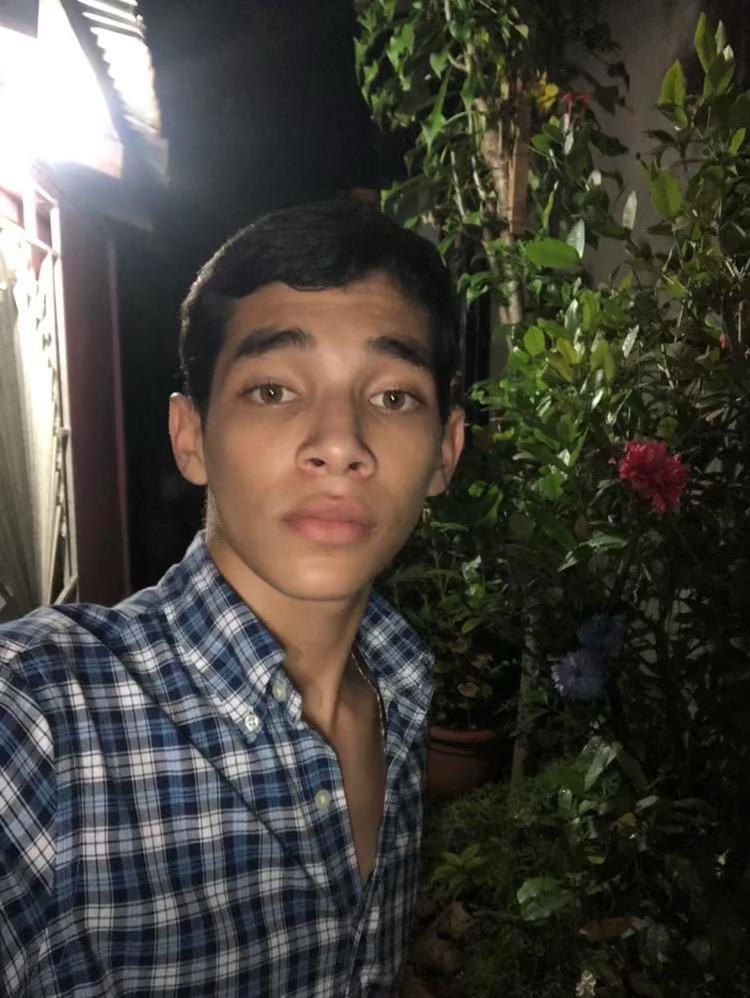

| Mi Portafolio Personal | |
| Inicio | Sobre Mí | Proyectos | |
|  |
Bienvenido a mi portafolioMi nombre es Carlos Eduardo Castañeda Galo, tengo 16 años y soy estudiante de último año de la carrera de Bachiller Técnico Profesional en Informática. Durante mi formación académica he desarrollado conocimientos en el área de la tecnología, especialmente en el diseño y desarrollo de páginas web, manejo de herramientas informáticas y fundamentos de programación. Me considero una persona responsable, creativa y comprometida con mi aprendizaje. Este portafolio tiene como objetivo mostrar mis proyectos, habilidades y el progreso que he alcanzado a lo largo de mi formación técnica. En este portafolio te enseñare acerca de mi y mis proyectos a futuro. |
| © 2026 - Mi Portafolio | |